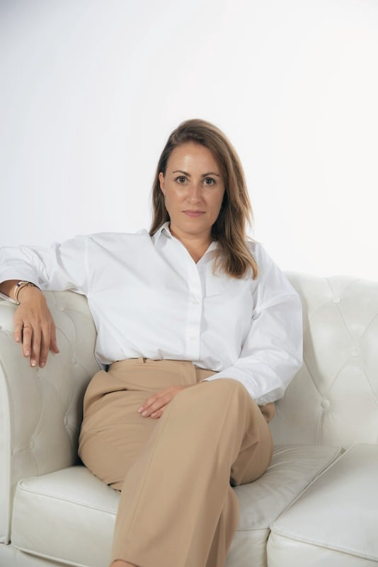

Estudio de Interiorismo
Cada proyecto es diseñado con su propia esencia y personalidad, dejando que los espacios cuenten su propia historia.
El Interiorismo es sentir y experimentar el espacio en el que estamos pero siempre manteniendo el alma del cliente.
Desde el estudio diseñamos con el entusiasmo y pasión del primer día, mimamos cada proyecto como si fuese único.
¡Déjame enseñarte de lo que somos capaces de hacer! ¿hablamos?
Sobre mí

Soy Irene Pascual, diseñadora de interiores y quiero contaros que mi pasión es mi profesión, os cuento como he llegado hasta aquí:
Aunque mis últimos años he estado en el mundo comercial, empecé en este mundo del interiorismo hace ya casi 20 años, mis comienzos fueron diseñando cocinas y poco a poco fui adentrándome más en este mundo realizando proyectos de reformas integrales de viviendas.
Después de más de 10 años de experiencia trabajando para otras empresas, finalmente me decidí a abrir mi propio Estudio de Interiorismo.